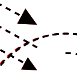

März 2023
Closing Time - Tom Waits
26.03.2023

Ich habe neulich festgestellt, dass ich Tom Waits bisher immer völlig falsch eingeschätzt habe, da ich nur noch sein Spätwerk der 80er und 90er kannte. Neulich bin ich jedoch auf seine erste Platte gestoßen, von der ich hier mal nur zwei Beispiele verlinke:
Wie man Eindruck schindet
26.03.2023

Da ich das folgende nur als Screenshot auf Mastodon geehen habe, wollte ich es für mich und die Nachwelt festhalten - und ein bisschen TeX üben. Ich schwöre, das hier kam dabei nicht zum Einsatz!
Neue Graphik-Primitiven für java.awt.Graphics2D
18.03.2023

Ich wollte eine Methode schaffen, neue Graphik-Primitiven, die zumindest in java.awt.Graphics2D - in Java noch fehlen, zu ergänzen.
Schraffuren für java.awt.Graphics2D
12.03.2023

Ich wollte eine Methode schaffen, unterschiedlichste Schraffuren in beliebigen Shapes zu erzeugen. diese Möglichkeit fehlt - zumindest in java.awt.Graphics2D - in Java noch.
Elektronik backen, ähh - reparieren
12.03.2023

Ich hatte mir vor einiger Zeit einen billigen PoE-Switch aus China angeschafft, um Raspis und ähnliche Kleinstcomputer darüber mit Strom und Netzwerk zu versorgen. Dazu verwendete ich entsprechende PoE-Splitter.
Entwurfsmodus für java.awt.Graphics2D
04.03.2023

Es ist jetzt bereits einige Zeit vergangen seitdem ich über Versuche berichtet habe, den "Servietten-Look" wie bei SketchViz oder Rough.js auch in Java-Programmen zu erreichen. Letztes Mal berichtete ich über komplexe Strokes, mit denen sich so etwas realisieren ließe.
Raspi - automatisch booten
04.03.2023

Ich habe wieder einmal an meinem Raspi herumgeschraubt...
Thin Client Experimente
02.03.2023
Ich bin wahrscheinlich wieder mal als Letzter auf einen Trend aufmerksam gemacht worden: Da heutzutage die Beschaffung fon Raspberry Pi Minicomputern immer schwieriger wird, ist mancher dazu übergegangen, ausgemusterte Thin Client Computer mit amd64 kompatiblen Prozessoren an ihrer Stelle einzusetzen.


Tags
Juni 2024 Mai 2024 April 2024 März 2024 Februar 2024 Januar 2024 Dezember 2023 November 2023 Oktober 2023 September 2023 August 2023 Juli 2023 Juni 2023 Mai 2023 April 2023 März 2023 Februar 2023 Januar 2023 Dezember 2022 November 2022 Oktober 2022 September 2022 August 2022 Juli 2022 bis zum Juni 2022 Upcoming...
Manche nennen es Blog, manche Web-Seite - ich schreibe hier hin und wieder über meine Erlebnisse, Rückschläge und Erleuchtungen bei meinen Hobbies.
Wer daran teilhaben und eventuell sogar davon profitieren möchte, muß damit leben, daß ich hin und wieder kleine Ausflüge in Bereiche mache, die nichts mit IT, Administration oder Softwareentwicklung zu tun haben.
Ich wünsche allen Lesern viel Spaß und hin und wieder einen kleinen AHA!-Effekt...
PS: Meine öffentlichen GitHub-Repositories findet man hier - meine öffentlichen GitLab-Repositories finden sich dagegen hier.